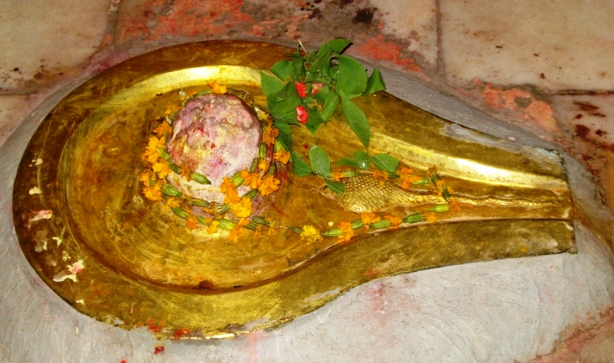

<?xml version="1.0" encoding="UTF-8"?><rss version="2.0"
	xmlns:content="http://purl.org/rss/1.0/modules/content/"
	xmlns:wfw="http://wellformedweb.org/CommentAPI/"
	xmlns:dc="http://purl.org/dc/elements/1.1/"
	xmlns:atom="http://www.w3.org/2005/Atom"
	xmlns:sy="http://purl.org/rss/1.0/modules/syndication/"
	xmlns:slash="http://purl.org/rss/1.0/modules/slash/"
	>

<channel>
	<title>Karvireshwar &#8211; Varanasi Temples</title>
	<atom:link href="index.html" rel="self" type="application/rss+xml" />
	<link>../../../../../index.html</link>
	<description>Temples of Varanasi as referred to in Kashi Khand</description>
	<lastBuildDate>Thu, 19 Jun 2025 05:16:46 +0000</lastBuildDate>
	<language>en-US</language>
	<sy:updatePeriod>hourly</sy:updatePeriod>
	<sy:updateFrequency>1</sy:updateFrequency>
	<generator>https://wordpress.org/?v=4.6.29</generator>
	<item>
		<title>KARVIRESHWAR</title>
		<link>../../../../../shiva-temples/karvireshwar/index.html</link>
		<pubDate>Sun, 09 May 2010 09:14:25 +0000</pubDate>
		<dc:creator><![CDATA[admin]]></dc:creator>
				<category><![CDATA[Karvireshwar]]></category>
		<category><![CDATA[Other Shiva Temples (E-K)]]></category>
		<category><![CDATA[Shiva Temples]]></category>
		<category><![CDATA[karvireshwar]]></category>
		<category><![CDATA[lakshmi kund]]></category>
		<category><![CDATA[shani temple]]></category>
		<category><![CDATA[vireshwar]]></category>

		<guid isPermaLink="false">../../../../../p=313.html</guid>
		<description><![CDATA[Goddess Parvaty wanted to know about  various Shiv Lings and deities at several places in Kashi and Lord Shiva was pleased to narrate about such deities (Kashi Khand, Chapter 97). In the process, the Lord mentions one Karvireshwar Ling in the vicinity of Mahalakshmeeshwar.  A devotee who worships Karvireshwar will be free from all ailments [&#8230;]]]></description>
				<content:encoded><![CDATA[<p>Goddess Parvaty wanted to know about  various Shiv Lings and deities at several places in Kashi and Lord Shiva was pleased to narrate about such deities (Kashi Khand, Chapter 97).</p>
<p>In the process, the Lord mentions one Karvireshwar Ling in the vicinity of Mahalakshmeeshwar.  A devotee who worships Karvireshwar will be free from all ailments and diseases.</p>
<p></p>
<p style="text-align: center;"><strong>(KARVIRESHWAR)</strong></p>
<p>Kashi Khand states that the entire locality is a Shakti Peeth. There are many powerful Devis in the area and of all the Shakti Peeths in Kashi, Mahalakshmi Shakti Peeth is the most powerful.</p>
<p><strong><span style="text-decoration: underline;">LOCATION OF KARVIRESHWAR</span></strong></p>
<p>Karvireshwar is located at D-52/41, outside Mahalakshmi Temple in the premises of 1008 Shani Maharaj, Poorab Mukhi Shani. Mahalakshmi temple and the locality (Lakshmi Kund) are quite famous and people can approach this place through Luxa by rickshaw.</p>
<h3></h3>
<h3><strong>Please watch our YouTube Video about Karvireshwar at following Link</strong></h3>
<h3></h3>
<p><a href="https://www.youtube.com/watch?v=P7WK69yzHsw&amp;t=5s">https://www.youtube.com/watch?v=P7WK69yzHsw&amp;t=5s</a></p>
<p>&nbsp;</p>
<h3></h3>
<h3>TYPES OF POOJA</h3>
<p>The temple is open from 06.00 a.m. to 01.00 p.m. and from 05.00 p.m. to 10.00 p.m.  Timings are flexible.  Devotees can perform pooja as per their convenience.</p>
]]></content:encoded>
			</item>
	</channel>
</rss>
